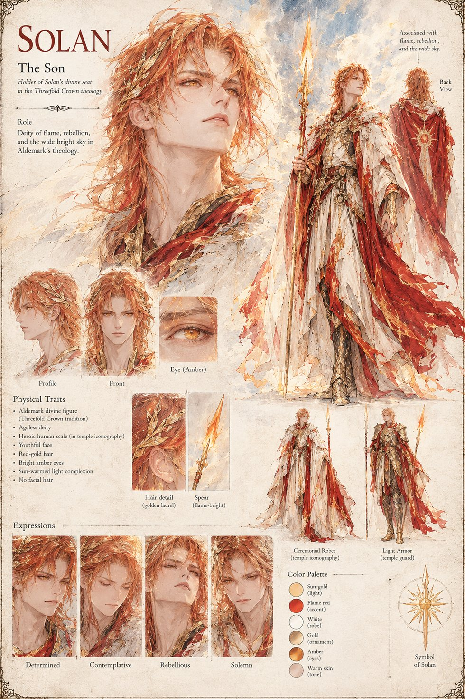

Solan
The Son · god of the Threefold Crown · flame, rebellion and the wide bright sky · shown here as temple iconography
The Son of the Threefold Crown's three, god of fire and rebellion and the wide bright sky, whose flame is lit over every oath a magistrate swears in Aldemark and whose seat Sigward holds. In Grenmoor, the village that sings on its way to the burning, the dreaming is taken as a blessing sent down by Solan himself, since who else but the god of fire and rebellion and the wide bright sky would think to grant a farmer the sight of his own heaven from above it; the villagers raise a shrine of fieldstone and unbleached cloth to what they call the Star-Walkers. In the Crown's last years a small sect, the Solan Ascendant, breaks from orthodoxy to declare the dreaming a sign that the Son has at last outgrown the Father's law, a heresy the Crown's other parties agree on nothing except crushing. The god himself takes no part in the manuscript's events.
The sheet draws the god as the temple paints him, not as anything seen in the dream: ageless and of heroic human scale, with a youthful face, red-gold hair under a golden laurel, bright amber eyes and a sun-warmed complexion, in white-and-crimson ceremonial robes with a flame-bright spear, and again in the light armor of the temple guard.